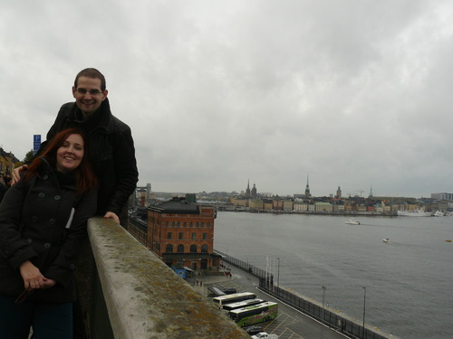
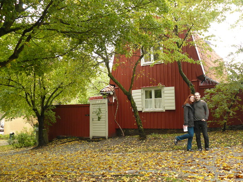
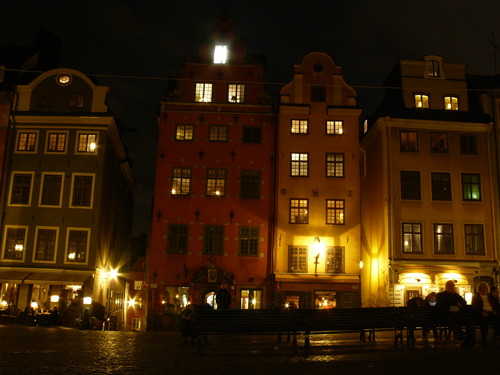

Kochání ve Stockholmu
Poslední den Zuzejkovy návštěvy jsme konečně po cestě “metrem” do města vystoupili u Globenu, což jsme už nějakou dobu plánovali. Globen je úplně obyčejná hokejová hala, akorát je trochu kulatá.

Následně jsme vystoupili na jihu jižního ostrova, abychom si jej prošli. Nedbaje průvodců, našli jsme spoustu hezkých zákoutí a kostelů.

Došli jsme až k průlivu (průplavu?), kde se nám otevřely nové výhledy. Vyvenčili jsme BSE a pak jsme šli k přístavu, kde jsem před lety vystupoval z finského trajektu po cestě z Erasmu do ČR.


Nad přístavem je pěkná vyhlídka, tak jsme na ni vylezli.

Pak jsme putovali po pobřeží a užívali si výhledy, historické uličky, apod. a zamilovávali jsme se do Stockholmu víc a víc.





Naše putování vyvrcholilo návštěvou upovídané a přátelské kavárny, koukáním na Thorův zadek a zasněním se u vyhlídky na centrum města, kde jsme byli za deště první den našeho výletu.
Po známých cestách jsme došli k místu, odkud jezdí MHD přívoz na Djurgården a svezli se při rozsvěcujícím se Stockholmu tam a zpátky. V dobrém rozmaru jsme pak procházeli nejcentrálnější centrum města plné historických domečků - tentokrát ale už křížem krážem tak, jak se nám chtělo, ne podle průvodců. Pospojovali a prošli jsme si všechny uličky, navštívili známá místa a kochali se tichou večerní atmosférou města, ve kterém takhle v neděli večer nikdo nebyl.

Nakonec jsme se ještě rozhodli dojít na radnici, ale nějak se nám to prodloužilo, protože jsme se nemohli přestat kochat. Krásně osvětlená Birgit Nilssons allé (alej) nás zavedla až k hlavnímu náměstí moderního Stockholmu, na Sergels Torg.
Po nějakém tom kochání se “jídlem” v Burger Kingu jsme konečně vyrazili směr radnice. I tam jsme našli další nové věci, kterých jsme si předtím nevšimli, takže jsme se zase kochali a kochali…
Poslední pohledy na noční Stockholm, hledání secesního veřejného záchodku, na metro a konec. Zuzejk ráno odlítá do Prahy, já zůstávám ještě tři dny na konferenci.